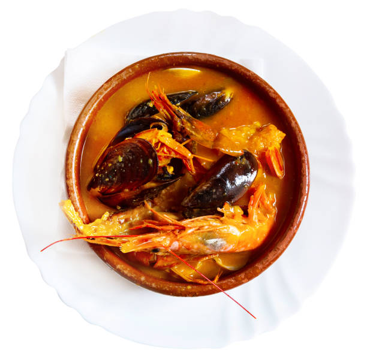

Gabriel Mego
Creador del sitio
Mi primer blog
La experiencia de las colas: Advierte a tus lectores que casi siempre hay fila para ingresar, especialmente en las noches y fines de semana. Sin embargo, la atención es sumamente rápida y la espera vale totalmente la pena.
Las mesas compartidas:En algunos locales se fomenta la convivencia compartiendo mesas largas con otros comensales si vas solo o en pareja, un detalle muy de "picantería" tradicional.
Porciones para compartir: Las sopas vienen en tamaños medianos y grandes. La porción grande es tan descomunal que una sola persona de poco comer podría llenarse por completo.
Historia de Siete Sopas: Siete Sopas es uno de los restaurantes más populares de Lima, Perú. Su fama se debe a la gran variedad de sopas tradicionales peruanas y a su atención durante las 24 horas del día. El restaurante busca mantener vivas las recetas criollas y ofrecer platos llenos de sabor y tradición.
Especialidades del restaurante: Entre los platos más pedidos destacan la parihuela, el caldo de gallina, el chupe de camarones y la sopa criolla. Cada preparación representa parte de la cultura gastronómica peruana y es elaborada con ingredientes típicos del país.
Una experiencia gastronómica: Visitar Siete Sopas es disfrutar de una experiencia cálida y tradicional. El restaurante combina sabores caseros, atención rápida y un ambiente familiar que atrae tanto a turistas como a peruanos.